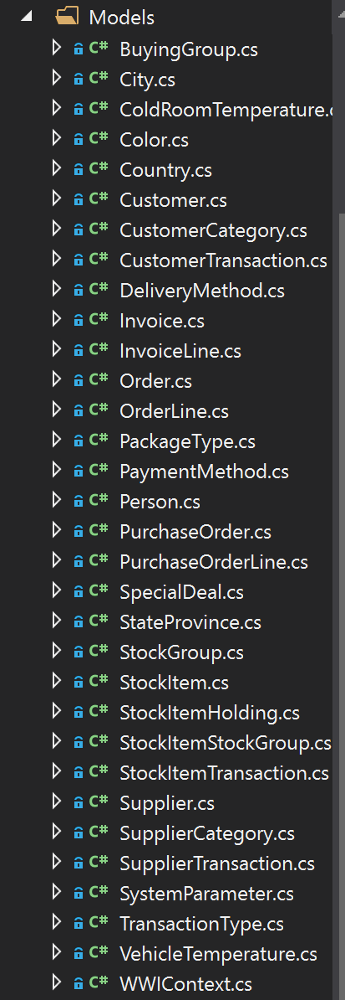

Homework 6 Blog
[Setup] We'll be using an existing database for this homework. For the last two years we used the venerable SQL Server example AdventureWorks, which was for an online cycling products store. It's time to do something different. We'll use SQL Server's newest example, called World Wide Importers. This database represents a wholesale novelty goods importer and distributor operating from the San Francisco bay area.
Begin by downloading and restoring the OLTP version of this database. Here's a direct link to a reasonably sized backup file that you can use to restore the db. This version contains only data from a single year (2013). Here's a link to the git repository where it resides. Lastly, here's the documentation. If you need help restoring it look here.
This database uses a data type (DbGeography) for locations that is not installed by default in an MVC app. You'll need to use Nuget to add Microsoft.SqlServer.Types to your project. In addition you'll need to add these lines to your Global.asax.cs file, i.e. the first two lines in:
protected void Application_Start()
{
// For Spatial types, i.e. DbGeography
SqlServerTypes.Utilities.LoadNativeAssemblies(Server.MapPath("~/bin"));
// This next line is a fix that came from: https://stackoverflow.com/questions/13174197/microsoft-sqlserver-types-version-10-or-higher-could-not-be-found-on-azure/40166192#40166192
SqlProviderServices.SqlServerTypesAssemblyName = typeof(SqlGeography).Assembly.FullName;
AreaRegistration.RegisterAllAreas();
FilterConfig.RegisterGlobalFilters(GlobalFilters.Filters);
RouteConfig.RegisterRoutes(RouteTable.Routes);
BundleConfig.RegisterBundles(BundleTable.Bundles);
}To help you get started with using the database I've generated a diagram of the tables we're using. It's not as easy to read as I envisioned but it'll show you the relations and the tables to look at.
Question
[Setup] Follow the steps shown in class (or here for reference: Entity Framework - Code First from Existing Database, the key part is from an existing database and reverse engineering the model) to create a MVC project (same template we've been using), add the database and reverse engineer (generate) model classes. The backup file has a number of "archive" tables; we don't want those, so select only the tables that don't have archive in the name. We also don't need the db views. I ended up with 31 model classes. Make sure you move yourDbContext class over into a DAL folder.
Solution
Question
[Content/Coding] Feature #1: People Search
As a salesperson, customer support employee, analyst or manager of World Wide Importers I want to find a particular person by name so I can look up information about them and email or call them. Also, I'd like to see their picture so I have a personal connection to our customer or employee. Sometimes I only remember their first name, sometimes their last, or sometimes just part of their name.
After speaking with stakeholders at WWI it is determined that they want a web page with a prominant search bar. Typing in a name, or part of a name and hitting return or clicking the search button will search the companies database for a list of names that match. The list of names should appear on the same page, below the search bar. Clicking on one of the names should take the user to a separate page where they can view the following information for the searched person (People entity):
- Full Name
- Their preferred name
- Phone Number
- Fax Number
- Email address (as a mailto link)
- The date they became a customer, member or employee (I used the
ValidFromattribute) - Their photo (there's an attribute in the table for photo but I think they're all null, so just use a placeholder until they start putting photos in the database)
For ease of use, clicking the back button should take the user back to the search page where the search results are still present.
Your stakeholders have not given a preference as to what this should look like or how you do this, so it's your choice. What controller(s) or views, or GET, POST, ... are up to you. Also, try to make it look decent please, but don't spend 10 hours fiddling with CSS.
Solution
Refer to video.
Question
[Content/Coding] Feature #2: Customer Sales Dashboard
That last feature was a great hit. Everyone is using it. It worked great for looking up everyone in the companies database. Many of the stakeholders want more though. If the person is a customer then they want to see some details about their company and WWI's sales to it. This user story describes what is needed.
As a salesperson, customer support employee, analyst or manager of World Wide Importers I want to view company information, purchase history and top items sold to the company that this customer is a representative of, so I can learn a little about the company, what we've sold them and how much profit we've made through this customer.
Specifically the stakeholders want the following. If the person searched for is the primary contact person (their ID is the PrimaryContactPersonID in the Customer) then display the following. If they are not the primary contact person, then don't show anything more than the previous feature.
-
For the company:
- Company name
- Phone number
- Fax number
- Website (as a link)
- What year they started as our customer
-
Purchases:
- How many orders has this company made?
- What is the total gross sales to this company? The Data Architect told you that this can be calculated by adding up the
ExtendedPricefor allInvoiceLinesfor allInvoicesfor allOrdersfrom thisCustomer. - How much profit total have we made from this customer? Similarly to the last one, the Data Architect told you that this can be calculated by adding up the
LineProfitfor allInvoiceLinesfor allInvoicesfor allOrdersfrom thisCustomer.
-
What are 10 most profitable (to us) items this customer has purchased? List the
StockItemID, Description, Profit and the Salesperson who handled the sale.
This view will need a lot of data and it won't come from just one model or a list. Here's the perfect opportunity to use the required View Model. Put it in a subfolder of your Models folder.
Solution
Refer to video.
Question
[Portfolio Content] And by now you know the drill; put it all in your Portfolio. Do you know what would make the grader really happy? A video of you demonstrating your website. In fact, I think for this one it's mandatory that you make a video. You can put it on your public_html or P: drive or upload it to YouTube (if private, share with morses@mail.wou.edu) or whatever.Solution
The long-awaited video!
Check out the code!
The code is in my github repository, see it here: